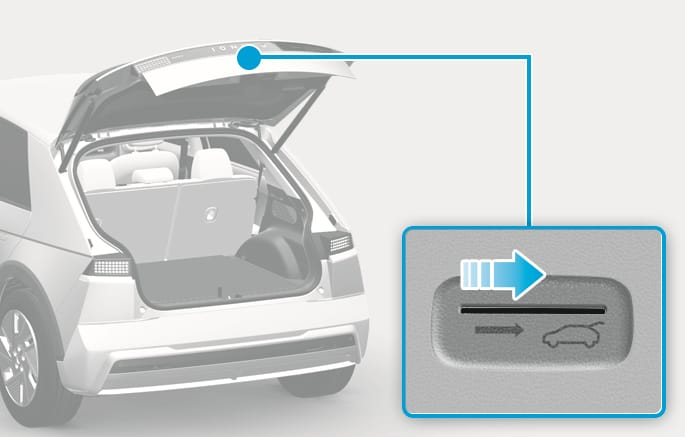

비상시 테일게이트 잠금 해제하기

2C_EmergencyPowerTailgateOpen
실수로 화물칸에 갇히는 경우, 테일게이트 내부 하단의 잠금 해제 장치에 열쇠 등 길고 납작한 물체를 넣고 화살표 방향으로 미십시오.
-
걸쇠가 움직이면서 테일게이트 잠금이 해제됩니다.
-
잠금 해제 후 테일게이트를 밀어서 열 수 있습니다.
-
비상 상황에 대비해 테일게이트 잠금 해제 장치의 위치 및 사용법을 숙지하십시오.
-
어린이가 화물칸 안에 들어가지 못하도록 하고, 화물칸에 사람이나 동물을 태우지 마십시오.
-
주행 중 테일게이트가 열리면 매우 위험합니다. 테일게이트 잠금 해제 장치는 비상시에만 사용하십시오.